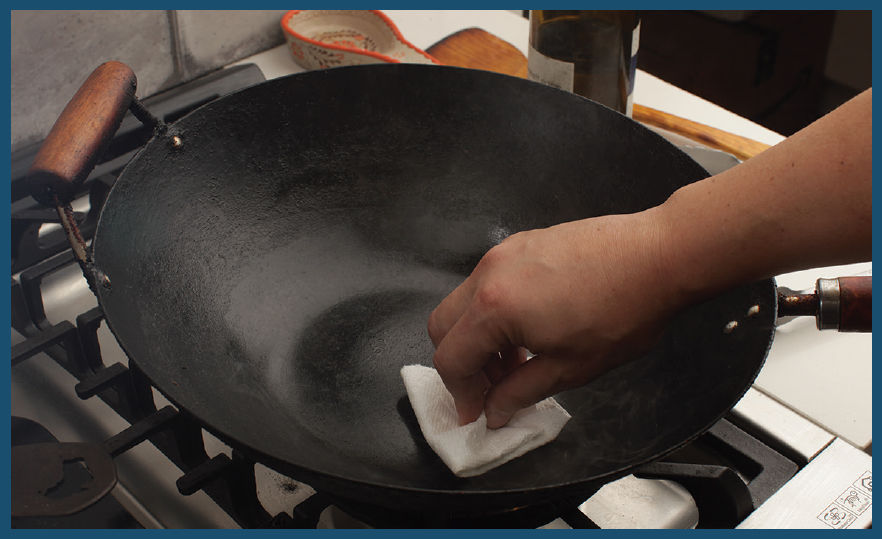
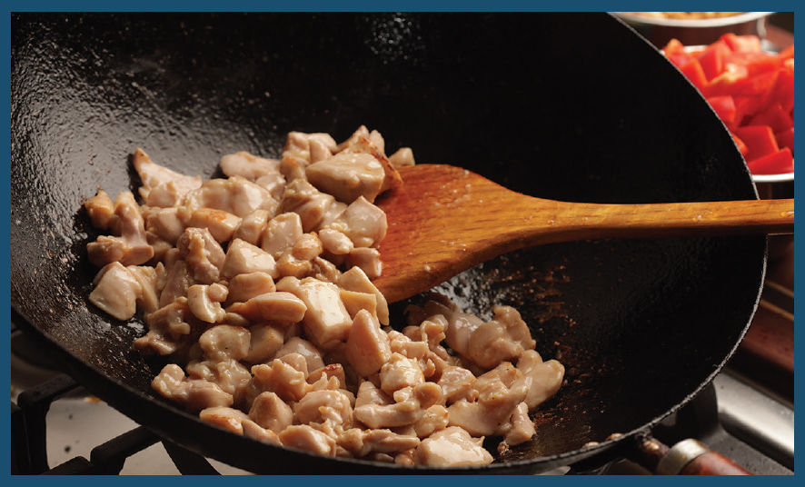
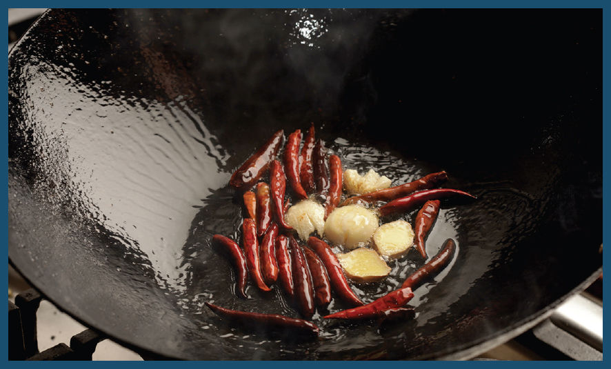
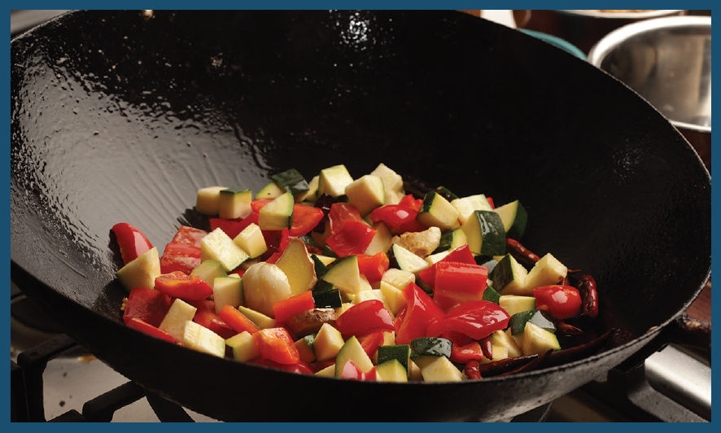
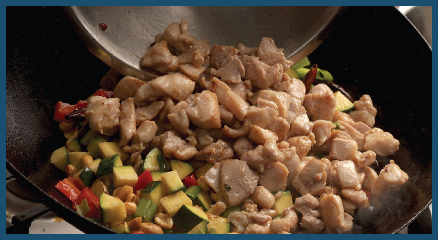
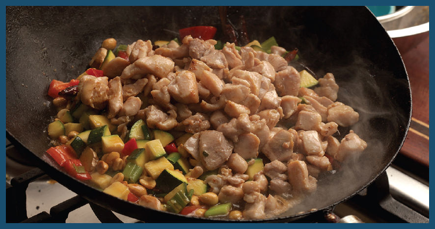
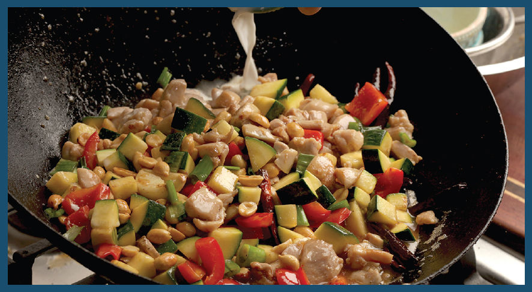
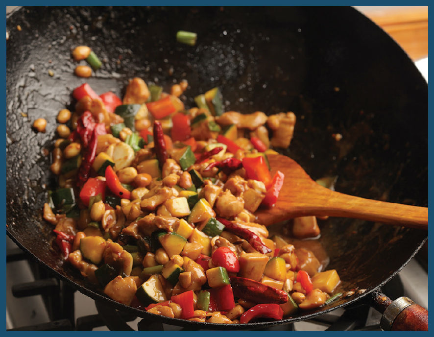

TAKEOUT-STYLE DICED CHICKEN WITH HOT PEPPERS AND PEANUTS
Growing up, I spent my Saturdays at the Manhattan School of Music, just a few blocks away from the Morningside Heights location of Ollie’s, a minichain of New York restaurants that specializes in Chinese American cuisine, in all its extra-saucy, moderately gloppy glory. My standard order there was the Diced Chicken with Hot Peppers and Peanuts. It’s not too hot, not too powerfully flavored, and has a pretty good balance of meat and vegetables designed to be eaten as a meal (or in my case, a $6.95 lunch special) unto itself with a side of white rice.
The dish has its roots in gong bao ji ding, or kung pao chicken, the Sichuan classic made with hot dried chiles, Sichuan peppercorns, and peanuts in a mild sauce (you can find my recipe on here). Just trade out most of the dried chiles for diced bell peppers and celery and you’re basically there. (If you’re partial to the version served at the Chinese-owned takeout chain Panda Express, you can use zucchini in place of celery.) All you need is a bottomless pot of tea, some steamed white rice, perhaps a side of egg drop or hot and sour soup, and a fortune cookie or two and you’ve hit lunch-special nirvana.
It follows the basic stir-fry formula to a T, and it’s a Chinese American staple, making it the perfect recipe to start honing your stir-fry chops. Let’s go step by step for this one.
Before You Begin • Mise en Place
Mise en place is the French term for the things you should have in place before you begin cooking. It can include things like trimmed meat, chopped vegetables, minced herbs, ground spices, cooking vessels and tools. The idea is that at no point during the cooking process should you ever have to scramble to search for something while your food overcooks.
For a stir-fry, that means chopping your vegetables, cutting and marinating your meats, collecting your additional ingredients, mincing your aromatics, and measuring out and combining your sauce ingredients.
Before I begin, I always take a look at the complete recipe so that I can consolidate ingredients. In this case I can go ahead and put my marinated chicken in one bowl, my diced zucchini or celery and bell peppers together in another (they get added to the wok at the same time), peanuts and scallion segments in a third, combine all of my aromatics (smashed garlic, ginger, and whole dried hot chiles) in a fourth, combine my sauce ingredients in a fifth, and make a cornstarch slurry in the last.
Finally, I’ll also keep a large bowl on hand for combining ingredients as they’re cooked and a serving platter for when everything is done.
With my mise en place ready, it’s time to cook.
Step 1 • Preheat the Wok

As with all large stir-fries on a home range, I cook meats and vegetables in batches to ensure that the wok doesn’t lose too much heat during the cooking process, before combining them all at the end.
I start by heating a thin film of oil that I wipe into the wok with a paper towel. When it’s literally smoking hot, I add a bit more cooking oil (see “Does a Hot Wok and Cold Oil Really Prevent Sticking?” on here). At this stage many recipes would call for adding some aromatics to the oil, like a slice of ginger, a smashed garlic clove, or spices, to add flavor to the oil before stir-frying. With the batch-cooking technique, however, I first par-cook all my ingredients, then add the aromatics to bloom in oil just before the last phase, where everything is recombined. This is done to ensure that the aromatics don’t burn and that their volatile aromas are at their peak potency when eaten.
Step 2 • Stir-Fry the Chicken

In goes the chicken. With a rip-roaring, smoking-hot wok, the chicken should take on color in just a matter of minutes. Lightly browned but still raw in the center is what we’re going for here. Don’t worry about that raw center: The chicken will continue to cook via residual heat once it gets transferred to a bowl and set aside, and it’ll get heated up once more in the sauce later on.
I usually stir-fry my meat first because meat is able to handle residual heat much better than most vegetables can. Vegetables will overcook and turn mushy if you let them sit for too long after cooking.
Step 3 • Infuse the Oil

The next step is to infuse the oil with some aromatics. In a traditional stir-fry, you’d do this right at the start, but when working in batches like this, I wait until the final batch of ingredients. Oil can be infused with a variety of aromatics. In this case I’m using whole dried chiles, smashed garlic, and ginger slices.
If you’ve ever eaten this dish at a Chinese restaurant, you’ll know that it’s typically hot in name only. There’s not much heat to warrant the one red chile that gets printed on the menu next to the title. In this case the chiles are really more for their roasty aroma than for actual capsicum heat. (Although if you’d like, you can slit them open or snip them into segments with kitchen shears so that their seeds and ribs make it into the dish, adding significant heat.)
Step 4 • Stir-Fry the Vegetables

For this recipe I use red and green bell peppers cut into large dice, along with celery or zucchini that’s cut into equal-size chunks.
If you have a pretty powerful burner, you’ll probably be able to cook the vegetables together. Otherwise, you’ll want to cook them in batches, transferring each batch to the bowl with the chicken as it cooks and letting the wok come to a light smoke in between batches. The goal is to get some charring and color on them before they soften too much—this shouldn’t take more than a minute or two.
Step 5 • Add Peanuts and Scallions

Once the vegetables are done, in go the peanuts and scallion segments. Traditional Chinese recipes will have you par-cook raw peanuts by roasting, simmering, or frying before you subsequently stir-fry them. Thankfully, this is not a traditional Chinese recipe, and roasted peanuts straight off the supermarket shelf do just fine.
Step 6 • Return Everything to the Wok

Drop the chicken back into the wok (along with the vegetables if you cooked them in batches).
Step 7 • Sauce It Up!

Next, add the sauce, which you’ve thoughtfully premixed and had ready to go from the start (right?). It’s a simple blend of soy sauce, chicken broth, vinegar, sesame oil, and sugar. Like many Chinese American dishes, it has a distinctly sweet and sour flavor profile.
Step 8 • The Sauce Thickens

Last step: Splash in some of the cornstarch slurry and give it all a quick toss over the heat to thicken the sauce. If the sauce is too thin, add a little more slurry. If it’s too thick, splash in a little water. The sauce should thicken enough to coat each piece in a glossy sheen without getting too gloppy.
OK, a little gloppiness is OK. It’s an essential part of the totally authentic inauthentic experience.
I get a little giddy when I see food like this. Don’t get me wrong, I get giddy when I see real Chinese food, with thousands of years of development and tradition poured into it, but there’s a reason those Upper West Side Cantonese restaurants all do so well, and it’s got something to do with food like this.
